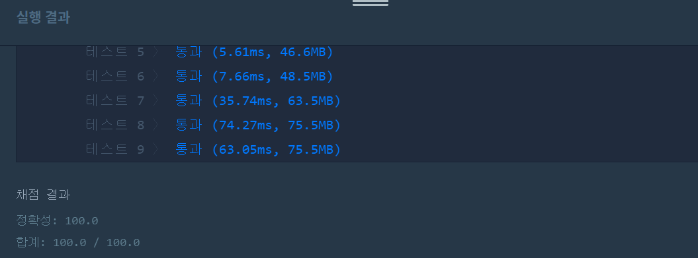
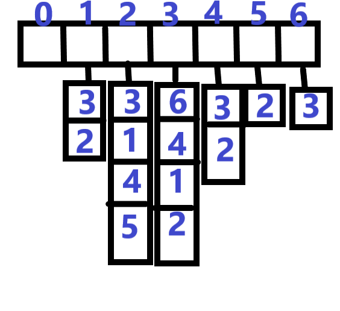

👀 문제
https://programmers.co.kr/learn/courses/30/lessons/49189
👊 도전
1. 설계
- ArrayList를 이용하여 그래프를 구현한다.
- boolean[] visited로 노드 방문을 체크하고, int[] count로 1에서부터 해당 노드까지의 길이를 저장한다.
- 거리가 가장 먼 노드들만을 세서 리턴한다.
2. 구현 (성공 코드)
import java.util.*;
/**
*
* @author HEESOO
*
*/
class Solution {
public int solution(int n, int[][] edge) {
int answer = 0;
//그래프 구현
ArrayList<ArrayList<Integer>> list=new ArrayList<ArrayList<Integer>>();
for(int i=0;i<edge.length;i++){
list.add(new ArrayList<Integer>());
}
//노드 연결
int a, b;
for(int[] node:edge){
a=node[0];
b=node[1];
list.get(a).add(b);
list.get(b).add(a);
}
int[] count=new int[n+1];//1과의 거리 저장
boolean[] visited=new boolean[n+1];//방문여부
Queue<Integer> q=new LinkedList<>();
q.add(1);//시작점
visited[0]=visited[1]=true;//1에서 시작(0은 사용안함)
int now;
while(!q.isEmpty()){
now=q.poll();
for(int v:list.get(now)){//나와 연결된 노드들
if(!visited[v]){//방문하지 않은 곳이라면
count[v]=count[now]+1;//1과의 길이 저장
visited[v]=true;
q.add(v);//이곳과 연결된 노드에 방문하기 위함
}
}
}
//System.out.println(Arrays.toString(count));
int max=0;//1과 가장 멀리 떨어진 노드와의 길이 저장
for(int cnt:count){
if(max<cnt){//더 큰 길이가 있다면 그게 max
max=cnt;
answer=1;
}
else if(max==cnt) answer++;
}
return answer;
}
}
3. 결과
 🤟 성공 🤟
4. 설명
- ArrayList를 이용하여 그래프를 구현한다.

- 노드가 1부터 시작하므로 0은 사용하지 않는다.
- ArrayList<ArrayList
>로 선언하여 리스트가 리스트를 원소로 가지게 한다.
- 큐로 노드들을 방문한다.
- 1부터 시작해서 1과 연결된 노드들을 방문한다.
- 이때 처음 방문하는 노드라면 1과의 거리를 count[i]에 저장한다.
- count[]로 1과 제일 멀리 떨어진 노드들의 갯수를 센다.
- max는 0으로 초기화하여 이보다 더 큰 거리가 나오면 max값을 바꾸고, answer=1로 초기화한다.
👏 해결 완료!
코드 구현 자체는 어렵지 않았지만 아직도 문제를 보고 직접 풀기까지는 나에게 무리인 것 같다.
참고
- 프로그래머스_가장 먼 노드_그래프(java) https://heedipro.tistory.com/233